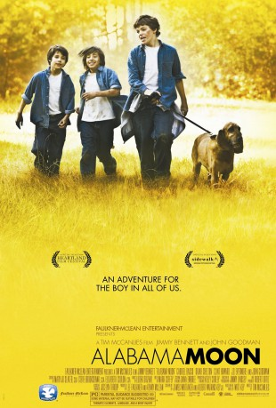
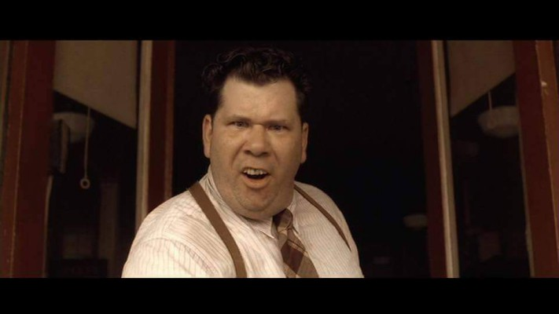
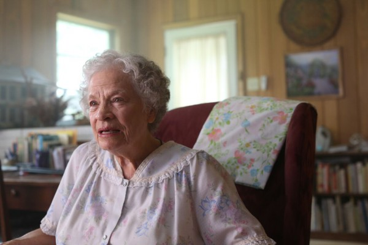
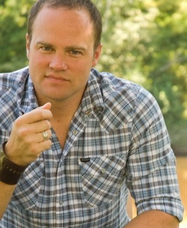
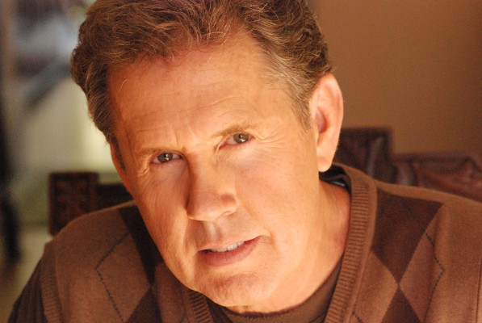

#7794 Alabama Moon - Abenteuer Leben
Alternativ: Alabama Moon
 
 IMDB-Wertung: 6.6 / 10
IMDB-Wertung: 6.6 / 10  Metascore: 0
Metascore: 0 
Moon Blake is raised by his loving but government-paranoid father Oliver in a hidden cave in the Alabama forests. Oliver dies from a leg wound he refuses to have medically treated, so Moon is told to move away, alone, and start a new home in the Alaskan wild-lands. Constable Sanders, however - the mean local cop - finds the boy with his father's guns, abuses him and has him locked away till majority age for 'assault' within Mr. Gene's grim Pinson home for boys. Moon soon makes friends with shy, sickly Kit and apparent bully Hal, then sets up a mass escape, on which only the trio actually follows through. Sanders fails to catch them, but the unforgiving elements reshuffle the cards dramatically. An uncle is meanwhile found.
Jahr: 2009
Dauer: 99 Minuten
FSK: 12
Land: USA Studio: Faulkner-McLean EntertainmentTonspuren:
Untertitel:
Auflösung: 1080p (1920x816) Größe: 5857 MB
Genre: Drama, Familie
Regisseur: Tim McCanlies
Drehbuch: Watt Key
Soundtrack: Ludek Drizhal
Darsteller:
- Jimmy Bennett als Moon Blake
- Gabriel Basso als Hal Mitchell
- Uriah Shelton als Kit
 Clint Howard als Constable Sanders
Clint Howard als Constable Sanders John Goodman als Mr. Wellington
John Goodman als Mr. Wellington J.D. Evermore als Oliver 'Pap' Blake
J.D. Evermore als Oliver 'Pap' Blake- Elizabeth Jackson als Rachael Gene
-  John McConnell als Mr. Mitchell
-  Lenore Banks als Mrs. Broomstead
-  Mark Adam als Uncle Mike
-  Gary Grubbs als Judge Mackin
- Cyrus Thompson als Younger Boy #1
- Sean Michael Cunningham als Younger Boy #2
- Shannon Hand als Receptionist
- Tammi Arender als TV Reporter
 Annalise Basso als Cousin Alice (uncredited)
Annalise Basso als Cousin Alice (uncredited)- Jessica Ameelah McDaniel als Aunt Sarah (uncredited)
 Jay Oliver als Hospital Patient (uncredited)
Jay Oliver als Hospital Patient (uncredited)- Jake Austin Walker als Older Orphan Boy (uncredited)
- Michael P. Sullivan als Mr.Gene
- Kenny McLean als Officer Pete
- Walter Breaux als Mr. Carter
- Peter Gabb als George Albroscotto
- Chase McDaniel als Older Boy
- John Wilmot als Old Man
- Dixie als Snapper
- Albert H. Bongard IV als News Photographer (uncredited)
- Gaven Tomas' Brooks als Orphan Boy (uncredited)
- Seth Nichols als Cousin David (uncredited)
- Chaz Smith als News Cameraman (uncredited)
Datei: X:\2009(A-F)\Alabama Moon - Abenteuer Leben (2009, FSK12, 1920x816).mkv seit 20.12.2017
Festplatte: HD 2008(G-Z)-2009(A-F)
 Es gibt insgesamt 91 Filme in der Gruppe '2009(A-F)'
Es gibt insgesamt 91 Filme in der Gruppe '2009(A-F)'